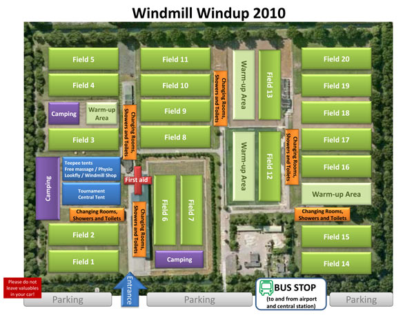

WW2010
Amsterdam June 11-13
< home
Field Map
Download the Field map in PDF format.
here
Fields at Google Maps
Check out the fields and Amsterdam on
Google maps
.
Picture 600px

click to top
< home
<< more on the regular site